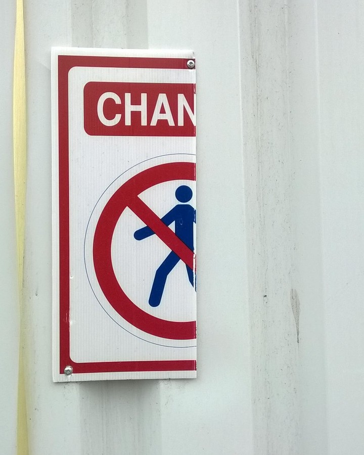

| [i] outils et chantiers de recherches |
- indiscipline-s-oeuvriere-s
- instagram |
en cours |
 |
| [1] Chantier contemporain |
vidéo |
octobre — décembre 2017 |
résidence de travail oeuvrière non-productive et non commissionnées mutualisant ouvrier.e.s plasticien.nne.s et artisan.e.s industriels sur le site du chantier primark |
| [2] Mise en pli |
vidéo |
janvier — avril 2018 |
résidence de travail indisciplinée artiste/préposé.e.s- au-confort,« Récits de tâches », domestiquer la tache, d’une durée de trois mois, mise en place de manière non-commissionnée et officieuse à l’Hôtel Chicoutimi (QC, Canada) |
| [3] chantier contemporain, retro(pros)pective |
pièce jointe |
Avril 2019 |
projet de restitution d'ouvrage prospectif en cours, plannification |